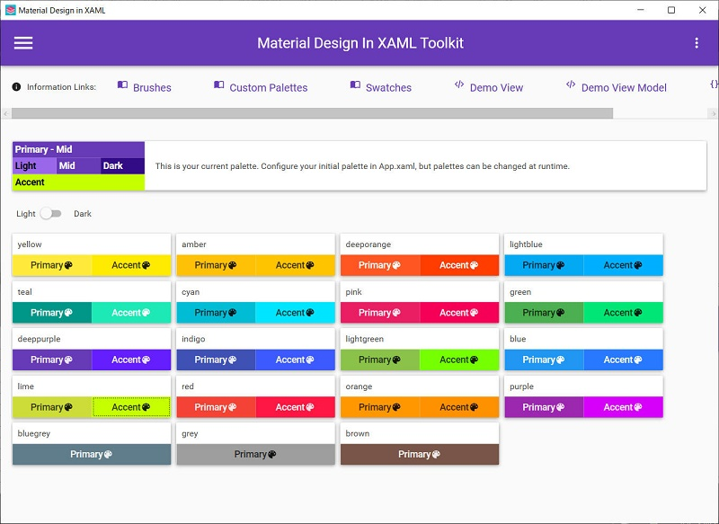

オープンソース "Material Design In XAML" を使ってプログラミングをしてみます。
1. "Super Quick Start"
2. buttons
[概要]
まずは ”https://github.com/MaterialDesignInXAML/MaterialDesignInXamlToolkit/wiki/Super-Quick-Start” に記載されているサンプルプログラム "Super Quick Start" を動かしてみます。
[評価環境]
| コンパイラ : | Visual Studio 2019 pro., | Version 16.4.5 |
| OS: | Windows10 home, | Version 1909 |
| PF: | MaterialDesignThemes, | v3.0.1 |
| MaterialDesignColors, | v1.2.2 | |
(1) WPF プロジェクトを新規作成します。ここでは ".NET Framework 4.6.1" で作成しています。
(2) プロジェクトへ NuGet で ”MaterialDesignThemes” を追加します。
本稿を記載時は v3.0.1 でした。
「変更のプレビュー」を表示したら「OK」ボタンをクリックします。
(3) "App.xaml" を編集
下記記事に従って、"App.xaml" を編集します。
["App.xaml"]
<Application x:Class="QuickStart.App"
xmlns="http://schemas.microsoft.com/winfx/2006/xaml/presentation"
xmlns:x="http://schemas.microsoft.com/winfx/2006/xaml"
xmlns:local="clr-namespace:QuickStart"
StartupUri="MainWindow.xaml">
<Application.Resources>
<ResourceDictionary>
<ResourceDictionary.MergedDictionaries>
<ResourceDictionary Source="pack://application:,,,/MaterialDesignThemes.Wpf;component/Themes/MaterialDesignTheme.Light.xaml" />
<ResourceDictionary Source="pack://application:,,,/MaterialDesignThemes.Wpf;component/Themes/MaterialDesignTheme.Defaults.xaml" />
<ResourceDictionary Source="pack://application:,,,/MaterialDesignColors;component/Themes/Recommended/Primary/MaterialDesignColor.DeepPurple.xaml" />
<ResourceDictionary Source="pack://application:,,,/MaterialDesignColors;component/Themes/Recommended/Accent/MaterialDesignColor.Lime.xaml" />
</ResourceDictionary.MergedDictionaries>
</ResourceDictionary>
</Application.Resources>
</Application>
(4) "MainWindow.xaml" を編集
下記記事に従って、"MainWindow.xaml" を編集します。
["MainWindow.xaml"]
<Window x:Class="QuickStart.MainWindow"
xmlns="http://schemas.microsoft.com/winfx/2006/xaml/presentation"
xmlns:x="http://schemas.microsoft.com/winfx/2006/xaml"
xmlns:d="http://schemas.microsoft.com/expression/blend/2008"
xmlns:mc="http://schemas.openxmlformats.org/markup-compatibility/2006"
xmlns:local="clr-namespace:QuickStart"
mc:Ignorable="d"
Title="MainWindow" Height="300" Width="400"
xmlns:materialDesign="http://materialdesigninxaml.net/winfx/xaml/themes"
TextElement.Foreground="{DynamicResource MaterialDesignBody}"
TextElement.FontWeight="Regular"
TextElement.FontSize="13"
TextOptions.TextFormattingMode="Ideal"
TextOptions.TextRenderingMode="Auto"
Background="{DynamicResource MaterialDesignPaper}"
FontFamily="{DynamicResource MaterialDesignFont}"
>
<Grid>
<materialDesign:Card Padding="32" Margin="16">
<!--<TextBlock Style="{StaticResource MaterialDesignTitleTextBlock}">My First Material Design App</TextBlock>-->
<TextBlock Style="{DynamicResource MaterialDesignBody1TextBlock}">My First Material Design App</TextBlock>
</materialDesign:Card>
</Grid>
</Window>
[注意]
元のコード {DynamicResource MaterialDesignTitleTextBlock}
はエラーになってしまいました。
ここを "MaterialDesignBody1TextBlock" へ変更したらビルドできるようになったので、この
Style 名称がなくなったのか、または上記設定では何か足りないのか、あたりだと思います。
[実行画面]
・・・ んー、なんか微妙にホームページの画面と違う。まぁ、動いたから一旦良しとしましょう。
[参考] ホームページ上にあった動作時の画面は以下の通り。
[概要]
"MaterialDesignDemo.exe" の "buttons" をまねてボタンを並べてみます。
[評価環境]
| コンパイラ : | Visual Studio 2019 pro., | Version 16.4.5 |
| OS: | Windows10 home, | Version 1909 |
| PF: | MaterialDesignThemes, | v3.0.1 |
| MaterialDesignColors, | v1.2.2 | |
["App.xaml"]
<Application x:Class="Buttons.App"
xmlns="http://schemas.microsoft.com/winfx/2006/xaml/presentation"
xmlns:x="http://schemas.microsoft.com/winfx/2006/xaml"
xmlns:local="clr-namespace:Buttons"
StartupUri="MainWindow.xaml">
<Application.Resources>
<ResourceDictionary>
<ResourceDictionary.MergedDictionaries>
<ResourceDictionary Source="pack://application:,,,/MaterialDesignThemes.Wpf;component/Themes/MaterialDesignTheme.Light.xaml" />
<!--<ResourceDictionary Source="pack://application:,,,/MaterialDesignThemes.Wpf;component/Themes/MaterialDesignTheme.Dark.xaml" />-->
<ResourceDictionary Source="pack://application:,,,/MaterialDesignThemes.Wpf;component/Themes/MaterialDesignTheme.Defaults.xaml" />
<ResourceDictionary Source="pack://application:,,,/MaterialDesignColors;component/Themes/Recommended/Primary/MaterialDesignColor.DeepPurple.xaml" />
<!--<ResourceDictionary Source="pack://application:,,,/MaterialDesignColors;component/Themes/Recommended/Primary/MaterialDesignColor.Indigo.xaml" />-->
<ResourceDictionary Source="pack://application:,,,/MaterialDesignColors;component/Themes/Recommended/Accent/MaterialDesignColor.Lime.xaml" />
<!--<ResourceDictionary Source="pack://application:,,,/MaterialDesignColors;component/Themes/Recommended/Accent/MaterialDesignColor.Indigo.xaml" />-->
</ResourceDictionary.MergedDictionaries>
</ResourceDictionary>
</Application.Resources>
</Application>
["MainWindow.xaml"]
<Window x:Class="Buttons.MainWindow"
xmlns="http://schemas.microsoft.com/winfx/2006/xaml/presentation"
xmlns:x="http://schemas.microsoft.com/winfx/2006/xaml"
xmlns:d="http://schemas.microsoft.com/expression/blend/2008"
xmlns:mc="http://schemas.openxmlformats.org/markup-compatibility/2006"
xmlns:local="clr-namespace:Buttons"
mc:Ignorable="d"
Title="MainWindow" Height="186.612" Width="653.91"
xmlns:materialDesign="http://materialdesigninxaml.net/winfx/xaml/themes"
TextElement.Foreground="{DynamicResource MaterialDesignBody}"
TextElement.FontWeight="Regular"
TextElement.FontSize="13"
TextOptions.TextFormattingMode="Ideal"
TextOptions.TextRenderingMode="Auto"
Background="{DynamicResource MaterialDesignPaper}"
FontFamily="{DynamicResource MaterialDesignFont}"
>
<Grid>
<Button Style="{StaticResource MaterialDesignRaisedLightButton}" Width="100" Margin="46,51,0,0" HorizontalAlignment="Left" VerticalAlignment="Top">
LIGHT
</Button>
<Button Style="{StaticResource MaterialDesignRaisedButton}" Width="100" Margin="188,51,0,0" VerticalAlignment="Top" HorizontalAlignment="Left">
MID
</Button>
<Button Style="{StaticResource MaterialDesignRaisedDarkButton}" Width="100" Margin="333,51,0,0" VerticalAlignment="Top" HorizontalAlignment="Left">
DARK
</Button>
<Button Style="{StaticResource MaterialDesignRaisedAccentButton}" Width="100" ToolTip="Resource name: MaterialDesignRaisedAccentButton" Margin="477,51,0,0" HorizontalAlignment="Left" VerticalAlignment="Top">
ACCENT
</Button>
</Grid>
</Window>
[実行結果]
Theme を "Light"、Primary を "DeepPurple"、Accent を "Lime" にそれぞれ設定。

Theme を "Light"、Primary を "Indigo"、Accent を "Indigo" にそれぞれ設定。
Theme を "Dark"、Primary を "DeepPurple"、Accent を "Lime" にそれぞれ設定。
色の組み合わせなどは "MaterialDesignDemo.exe" で試せます。
いろいろと試してみてください。

3. ＊＊＊＊
[概要]
MaterialDesignInXaml で ＊＊＊ を作ってみます。
[評価環境]
| コンパイラ : | Visual Studio 2019 pro., | Version 16.4.5 |
| OS: | Windows10 home, | Version 1909 |
| PF: | MaterialDesignThemes, | v3.0.1 |
| MaterialDesignColors, | v1.2.2 | |
ソースコードからの引用は #include <iostream> こんな感じで書けます。
[動画例]
[プログラムソース "***.cpp"]
サンプルプログラム ダウンロード
記載： 木下英俊
2020/02/23 新規作成